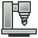
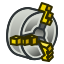
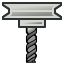
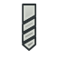

Artwork CAM Diese Symbole befinden sich im angegebenen Quellpfad. Für alle Symbole im Verzeichnisbaum siehe Grafik. src/Mod/CAM/ src/Mod/CAM/Gui/Resources/icons/     src/Mod/CAM/Images/Ops/ src/Mod/CAM/Images/Tools/ src/Mod/CAM/Path/Main/Gui/ ++<++noinclude++>++++<++/noinclude++>++ CAM scripting CAM Development Roadmap